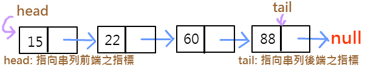
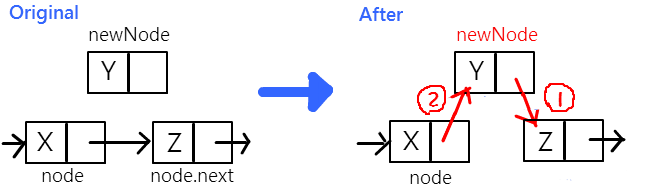
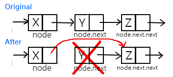

Ex.

- 插入新節點(Insert)
- 移除節點(Delete)
指標轉移：想要增加Y節點至X與Z節點之中，我們可以先將Y節點的鍵結指標指向Z，再將X節點的鍵結指標指向Y。

| 語法： ① newNode.next = node.next; ② node.next = newNode; |
指標轉移：想要刪除X與Z之間的Y節點，就將X節點的鍵結指標指向Z即可。

| 語法： node.next = node.next.next; |
由上圖可知，我們是利用改變串列的指標來做到「邏輯性移除(Logically Remove)」的動作。
而要做到「實際移除(Physically Delete)」節點，讓此節點從記憶體中刪除，在Java語言中會自動被gc(garbage collection)回收，而C語言則需要使用free();
而Single Linked List無法直接取得上一個節點，必須從頭開始找。
| public class sllNode { public int data; public sllNode next; public sllNode(int i,sllNode n) { data = i; next = n; } } |
||
| 說明 | 示意圖 | 語法 |
|---|---|---|
| 建立一個新node，資料值為10， 讓p1指向它 |
 |
sllNode p1 = new sllNode(10,null); |
| 再建立另一個新node，資料值30， 由10這個node指向它 |
 |
p1.next = new sllNode(30,null); |
| 建立一個資料值20的node， 插入10和30這兩個node中間 |
 |
p1.next = new sllNode(20,p1.next); |
| 將中間資料為20的這個node刪除 |  |
p1.next = p1.next.next; |
| 讓30這個node指回10這個node |  |
p1.next.next = p1; |